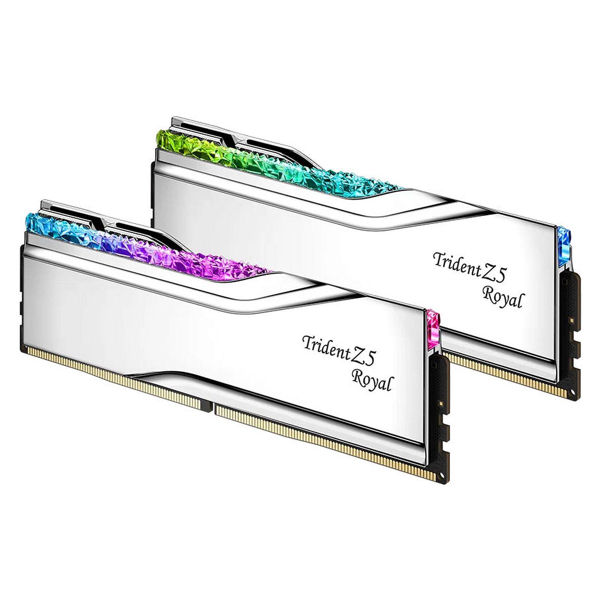

Home
Hva er RAM?
RAM (Random Access Memory) er kort fortalt datamaskinens kortsiktige arbeidsminne. Det kan sammenlignes med et skrivebord: jo større skrivebord du har, desto flere dokumenter, bøker og verktøy kan du ha liggende fremme samtidig, uten å måtte lete etter dem i skuffene hele tiden.
I en datamaskin har RAM ansvaret for:
- Å lagre data fortløpende: Når du starter et spill, en nettleser med mange faner eller et grafikkprogram, laster prosessoren de nødvendige dataene fra den tregere disken (SSD/HDD) over til det lynraske RAM-minnet. Slik får prosessoren umiddelbar tilgang til dem.
- Å samarbeide med prosessoren: Det fungerer som en rask buffer. Hvis prosessoren hele tiden måtte vente på data direkte fra lagringsdisken, ville hele datamaskinen fungert ekstremt sakte.
- Midlertidig lagring: Alt som ligger i RAM, forsvinner på et brøkdel av et sekund når du slår av eller starter datamaskinen på nytt. Det er et flyktig minne, ingenting lagres permanent der.
Jo større kapasitet (f.eks. 16 GB, 32 GB), desto smidigere fungerer datamaskinen når du har mange oppgaver åpne samtidig, og den takler krevende programmer mye bedre.
Viktige parametere når du velger RAM
Når du velger RAM, må du i tillegg til kapasiteten ta hensyn til tre viktige parametere:
- DDR (Double Data Rate): Dette er generasjonsstandarden for minnet. Hvert nye tall (DDR4, DDR5) betyr nyere teknologi som overfører data raskere og bruker mindre strøm. Hovedkort støtter bare én bestemt minnetype – du kan ikke sette DDR5-RAM inn i et hovedkort laget for DDR4.
- MHz (Klokkefrekvens): Hastigheten. Den angir hvor mange sykluser minnet utfører per sekund. Jo høyere verdi (f.eks. 3200 MHz, 6000 MHz), desto raskere kommuniserer RAM-brikken med prosessoren. Regelen er enkel: jo mer, desto bedre.
- CL (CAS Latency – Forsinkelse): Reaksjonstid. Den forteller hvor mange klokkesykluser minnet trenger for å klargjøre og sende de dataene prosessoren har bedt om. I motsetning til MHz, gjelder følgende regel her: jo lavere tall, desto bedre. Et CL16-minne vil reagere raskere enn CL18, forutsatt at begge kjører med samme hastighet (MHz).
Pris RAM i 2026!
Vi er i 2026, og AI er overalt – i vaskemaskiner, kjøleskap, oppvaskmaskiner, tørketromler, og selvfølgelig på telefonen og laptopen.
- Dette fører til ekstremt høye priser på RAM og SSD-disker,med økninger på alt fra 355% til 933%. Det har gjort det til et mareritt å bygge eller oppgradere PC-er nå til dags.
Denne situasjonen har skjedd for andre gang – denne gangen med RAM, tidligere med GPU-er.
Problemene med grafikkortprisene startet rundt 2020 og varte til 2022. Jeg rammet selv av dette da jeg bygde min første PC i 2020 og bestilte et RTX 2060 (som jeg fremdeles har i dag).
en totalpris på 15 000 kr gikk 7 000 kr utelukkende til grafikkortet – og da var RTX 2060 det svakeste kortet i 20-serien.
Hvem produserer egentlig RAM?
Det er verdt å vite at mesteparten av all RAM i verden produseres av bare tre store selskaper: Samsung, SK Hynix og Micron. Uansett hvilket merke som står på selve RAM-brikken (for eksempel Corsair, Kingston eller G.Skill), kommer selve minnebrikkene på innsiden nesten alltid fra en av disse tre produsentene.

^ Eksemple bilde ^
kilder: Wikipedia